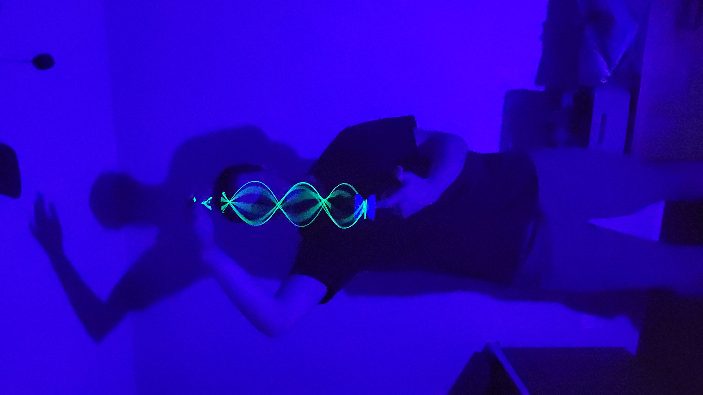

Jaren Udall | WDD 130
Hello, my name is Jaren Udall. I am from Mesa, Arizona. I have been married for almost four years and we are about to welcome our first baby in March of 2026. I am currently working as a pest control technician. I enjoy reading, watching TV shows and movies with my wife, and yoyoing. The picture above is me doing a yoyo trick called the "DNA" in front of a black light that makes the string glow. I am studying at BYU Pathway, working towards a degree in software development. Currently, I am learning the basics of web development, specifically HTML, python, and databases. I am excited to learn how to program learn the necessary skills to be a full stack developer.